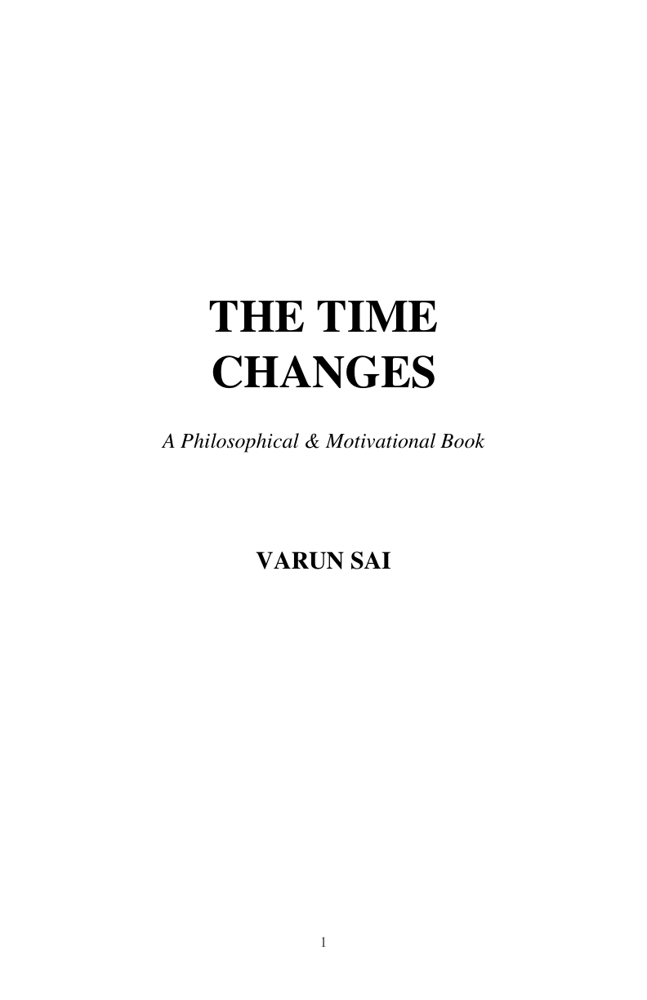

The Book
The Time Changes
“Time changes everything. But sometimes, the greatest change begins within us.”
The Time Changes is a philosophical and motivational work about the journey of becoming a different version of yourself.

About the Book
Time keeps moving whether we are ready for change or not. We often wait for the perfect moment, the right opportunity, or someone else to give us permission to begin.
But meaningful change begins when we become aware of where we are, accept reality, and decide to take responsibility for where we are going.
The Time Changes explores the struggles that quietly shape our lives — overthinking, comparison, fear, failure, expectations, waiting, and the desire for approval.
It asks a simple but important question:
Have you actually changed?
The Journey
The book follows a journey of personal transformation:
It is not about becoming perfect. It is about becoming more aware of who you are, what you choose, and what you are capable of becoming.
What You Will Explore
- Understanding yourself
- Breaking the habit of waiting
- Dealing with other people's opinions
- Building discipline when motivation fades
- Facing failure and learning from it
- Finding courage during difficult seasons
- Taking action instead of only thinking
- Discovering direction and purpose
- Becoming the person you keep imagining
A Final Question
Time will continue moving whether you change or not.
Make sure it changes you.
Get Your Copy
The Time Changes
By Varun Sai
Get the Book
Choose your preferred way to read or own The Time Changes.